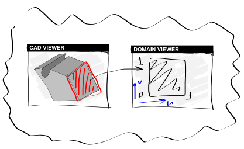

Analysis Situs has academic roots. It was initially developed with the target to present CAD
modeling principles to the community of Ph.D. students during the workshop on computational
geometry. The idea of the software was straightforward: the user interactively picks a boundary
element in the viewer to analyze the underlying geometric and topological structures. The following
picture is the early-stage illustration of the principle:

Subsequent development of the software was driven by the Ph.D. work of its authors. Our research
group lacked a software which would allow for easy prototyping of geometric algorithms based on
precise B-Rep technique. We found that such software packages exist for mesh modeling (OpenFlipper
and MeshLab are among the most famous ones) while literally, nothing similar existed for CAD
modeling. The prototyping software had to possess the following qualities:
- It should be highly interactive, flexible and extensible to allow for "cognitive visualization."
- The software should allow for easy technology transfer from academia to industry. The best way to transfer technology is to share its prototype.
The following list enumerates the main milestones of this story.
- November 2015: start prototyping.
- January 2016: the software was used to demonstrate B-Rep internals during computational geometry workshop in Paris.
- 2016-2017: the software was occasionally used in the educational process in Lobachevsky University, Nizhny Novgorod, Russia.
- September 2017: the first public paper about the software was presented at the Graphicon'2017 conference, Perm, Russia.
- September 2018: the plenary report on the future of FOSS geometric modeling was made at the Graphicon'2018 conference, Tomsk, Russia. Analysis Situs was used as a primary tool for demonstration.